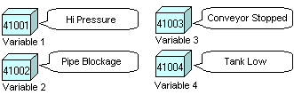
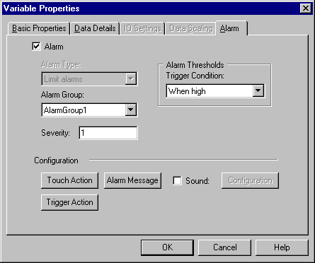
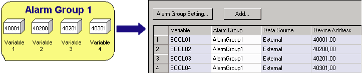

|
|
|
|
|
|
|
|
The following section describes a basic alarm setup for BOOL variables (bit address). If you want to set up integer or real variables with alarms, see Section 16.3.3, Word Alarms.

Create a BOOL variable, then double-click the variable row to open the Variable Properties dialog box.
Click the Alarm tab and select the Alarm checkbox.

|
Property |
Description |
|
Alarm Group |
In the Alarm Group area, set the Alarm Group in which the variable will be grouped. If you set the variable's Alarm Group to None, its alarms will not be associated to an alarm group and will not be displayed in any alarm summary. You may want to set the Alarm Group to None when the variable is used to trigger some action such as playing a sound file or running a Trigger Action. If you set the Alarm Group to None, the Touch Action property will be disabled. |
|
Trigger Condition |
Set the alarm's Trigger Condition.
|
|
Severity |
Define the alarm's Severity. Alarm messages with higher severity always display first. See Section 16.2.5.1, Severity. |
|
Sound |
You can specify a sound file to play when the alarm is triggered. For more information, see Section 16.5.1, Setting Up Alarms to Play Sound Files. |
|
Touch Action |
You can specify actions to occur when the alarm is selected. See Section 16.3.4, Setting Up Alarm Actions. |
|
Trigger Action |
You can specify actions to occur when the alarm is triggered. See Section 16.3.4, Setting Up Alarm Actions. |
|
Alarm Message |
Click the Alarm Message button and type in an alarm message in the Alarm Message Editor dialog box. In the Alarm Message Editor, click:
|
When you assign variables to an alarm group, you can view a list of the variables assigned to the alarm group in the alarm spreadsheet.

Click the alarm group.
The Alarm spreadsheet appears listing the variables assigned to the Alarm Group.